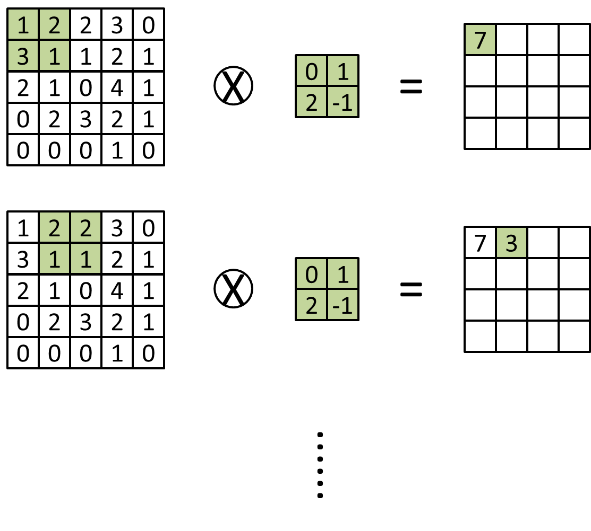
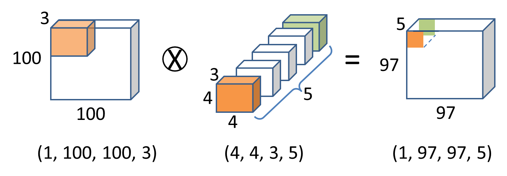
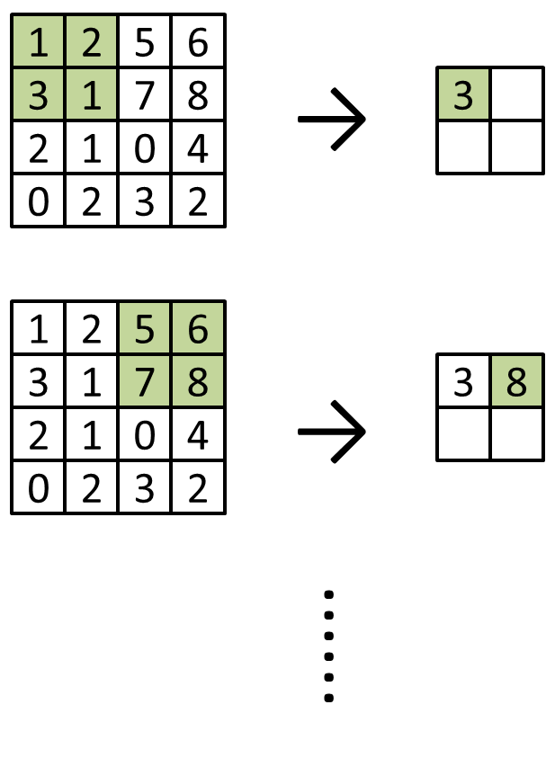

除了 MLP 以外，卷積神經網路(Convolutional Neural Network, CNN)也是一種經常被使用的神經網路。它的概念比較像是用濾波器模擬人眼的視野，經由一層一層的處理，來萃取從局部的邊緣、角點，到整體的物體、場景等特徵。因此，convolution 本身的操作，是由一塊小的矩陣（濾波器 filter，或者稱為卷積核 kernel）對一個大的矩陣（例如影像）進行滑動，每次將對應位置的元素相乘後再相加。以下圖為例，大矩陣的尺寸是 5 * 5，kernel 的尺寸是 2 * 2，每次移動一格後，會得到 (5-2+1) * (5-2+1) = 4 * 4 的輸出。當然，你也可以不要每次只移動一格，而是一次移動兩格、三格，甚至更多，這個就是 PyTorch 或其他常見工具裡的 stride 參數，而預設值為 1，代表一次移動一格；而如果希望輸出的矩陣大小與輸入相同，也可以事先在輸入矩陣的四周補零（或其他數值，如果你使用的工具允許），我們稱之為 padding。若需要知道考慮 stride 大於 1、輸入有 padding，或甚至 dilation 等情況後的輸出大小該如何計算，可以參考 PyTorch 等工具的官方文件。
Besides MLP, the convolutional neural network (CNN) is another neural network that is used a lot. The idea is a bit like using filters to imitate how the human eye sees. Through layer after layer of processing, it picks out features from local edges and corners, all the way up to whole objects and scenes. The convolution operation itself works like this: a small matrix (called a filter, or a kernel) slides over a big matrix (for example, an image). Each time, we multiply the elements at the matching positions and then add them up. Take the figure below as an example. The big matrix is 5 * 5 and the kernel is 2 * 2. If we move one step at a time, we get an output of (5-2+1) * (5-2+1) = 4 * 4. Of course, you don't have to move just one step each time. You can move two steps, three steps, or even more. This is the stride parameter in PyTorch and other common tools. The default is 1, which means moving one step at a time. If you want the output matrix to be the same size as the input, you can also add zeros (or other values, if your tool allows it) around the input matrix beforehand. This is called padding. If you want to know how to calculate the output size when the stride is larger than 1, the input has padding, or even when there is dilation, you can check the official documentation of tools like PyTorch.

而在 CNN 中，一個 convolution layer 會由多個 kernels 所組成，因此輸出會是多個矩陣疊在一起，疊加的維度稱為 channel。若仍以影像為例，假設輸入是一張 100 * 100 * 3 的 RGB 影像（3 個 channels），並且使用 5 個 4 * 4 * 3 的 kernels（kernel 的 channel 數必須跟輸入影像一樣）時，輸出會是一個 97 * 97 * 5 的特徵圖；輸出的每個 channel 都是由對應的一個 kernel 跟輸入影像做完整的 convolution 運算得到的。
In a CNN, one convolution layer is made up of many kernels, so the output is many matrices stacked together. The stacked dimension is called the channel. Let's use an image again. Suppose the input is a 100 * 100 * 3 RGB image (3 channels), and we use 5 kernels of size 4 * 4 * 3 (the number of channels of a kernel must be the same as the input image). Then the output will be a 97 * 97 * 5 feature map. Each channel of the output comes from doing a full convolution between one kernel and the input image.

上面圖片當中的下方的數字，用於影像時是依次代表訓練階段一次放幾張進去(batch size)、影像高度、影像寬度，以及該影像的 channel 數量；而用於 kernel 時則是 kernel 高度、kernel 寬度、輸入影像的 channel 數量，以及輸出影像的 channel 數量。需要注意的是，各家的深度學習工具為了效能等方面的考量，預設不一定是使用前述的維度順序；在目前較常見的工具中，主要是以 TensorFlow 會使用前述的順序（稱為 NHWC 或 channels-last），而其他工具例如 PyTorch，預設的影像維度順序是 batch size、該影像的 channel 數量、影像高度，以及影像寬度（稱為 NCHW 或 channels-first）；預設的 kernel 維度順序則是輸出影像的 channel 數量、輸入影像的 channel 數量、kernel 高度，以及 kernel 寬度。本頁中的範例程式碼是使用 PyTorch 來製作，因此程式碼的維度順序，會與圖片中以 TensorFlow 為準的順序不同，請留意。
The numbers below the figures above mean the following. For images, they are the number of images fed in at one time during training (batch size), the image height, the image width, and the number of channels of the image. For kernels, they are the kernel height, the kernel width, the number of channels of the input image, and the number of channels of the output image. Note that, for performance and other reasons, deep learning tools do not always use the dimension order above by default. Among the common tools today, mainly TensorFlow uses the order above (called NHWC, or channels-last). Other tools, such as PyTorch, use this default image order: batch size, number of channels, image height, and image width (called NCHW, or channels-first). The default kernel order is the number of output channels, the number of input channels, kernel height, and kernel width. The example code on this page is written with PyTorch, so the dimension order in the code is different from the TensorFlow-based order in the figures. Please pay attention to this.
為了減少運算量和增強模型對微小位移的不變性等緣故，通常還會在卷積層之間加入池化(pooling)的運算，也就是在一小塊區域裡，只保留一個代表性的數值。比較常見的方法是取平均值或最大值來作為代表，分別稱為 average pooling 和 max pooling（具體的函式名稱，在各家工具當中可能有所不同）。以 max pooling 為例，若只考慮一個 channel，影像大小 4 * 4，以及 kernel（或稱 pooling window）大小 2 * 2 時，操作方式的示意如下：
To reduce the amount of computation, and to make the model less sensitive to small shifts, we usually add pooling operations between convolution layers. Pooling means keeping only one representative value in a small region. The common ways are to use the average or the maximum value as the representative, called average pooling and max pooling (the exact function names may be different in different tools). Let's use max pooling as an example. If we only consider one channel, with an image size of 4 * 4 and a kernel (also called the pooling window) size of 2 * 2, the operation looks like this:

由上圖可見，在 pooling 運算中，pooling window 每次移動的長度，預設會等於 window 的大小，即 stride = window size（這點與 convolution kernel 的預設行為不同，請留意）。而當輸入大小不是 window size 的整數倍，而其他參數仍使用預設時，則多數工具的行為是將剩下的部分捨去，例如 7 * 7 大小的輸入，遇到 3 * 3 大小的 pooling window，則輸出大小會是 floor(7 / 3) * floor(7 / 3) = 2 * 2。若需要知道考慮 stride 不等於 window size、輸入有 padding，或甚至 dilation 等情況後的輸出大小，可以參考 PyTorch 等工具的官方文件。
As you can see in the figure above, in pooling, the step size of the pooling window is the same as the window size by default, that is, stride = window size. (This is different from the default behavior of a convolution kernel, so be careful.) When the input size is not a multiple of the window size and the other parameters stay at their defaults, most tools throw away the leftover part. For example, for a 7 * 7 input with a 3 * 3 pooling window, the output size is floor(7 / 3) * floor(7 / 3) = 2 * 2. If you want to know the output size when the stride is not equal to the window size, the input has padding, or even when there is dilation, you can check the official documentation of tools like PyTorch.
以下是用 PyTorch 的 CNN 相關函式庫，進行數字辨識的範例：
Below is an example of digit recognition using PyTorch's CNN-related libraries:
import torch import torch.nn as nn from torch.utils.data import DataLoader from torchvision import datasets, transforms device = torch.device('cuda:0' if torch.cuda.is_available() else 'cpu') train_set = datasets.MNIST(root='./data', train=True, download=True, transform=transforms.ToTensor()) test_set = datasets.MNIST(root='./data', train=False, download=True, transform=transforms.ToTensor()) print('Data shapes:', train_set.data.shape, test_set.data.shape) train_loader = DataLoader(train_set, batch_size=128, shuffle=True) test_loader = DataLoader(test_set, batch_size=128) model = nn.Sequential( nn.Conv2d(1, 16, kernel_size=3, padding=1), nn.ReLU(), nn.MaxPool2d(2), nn.Conv2d(16, 32, kernel_size=3, padding=1), nn.ReLU(), nn.MaxPool2d(2), nn.Flatten(), nn.Linear(32 * 7 * 7, 256), nn.ReLU(), nn.Linear(256, 10) ).to(device) optim = torch.optim.Adam(model.parameters()) criterion = nn.CrossEntropyLoss() model.train() for i in range(10): print(f'Epoch {i+1}/10') for X_batch, y_batch in train_loader: loss = criterion(model(X_batch.to(device)), y_batch.to(device)) optim.zero_grad() loss.backward() optim.step() model.eval() correct = sum( (model(X.to(device)).argmax(dim=1) == y.to(device)).sum().item() for X, y in test_loader ) print('Accuracy: {:.2f}%'.format(100 * correct / len(test_set)))在上述範例中，
- 使用的資料集是 MNIST，內容為 0~9 的數字影像，影像大小為 28 * 28，只有一個 channel。在同一資料夾下初次執行此範例時，需要花時間下載該資料集，請稍做等候。
- (Convolution → activation function → pooling) * n → flatten → MLP 是使用 CNN 的經典架構之一，你也可以視需要做後續修改。
- 首個 nn.Linear 的輸入大小為 32 * 7 * 7，是因為前面的網路層對原始輸入進行處理後，輸出為 32 個 channel，大小為 7 * 7 的特徵圖（請試著自己推算看看）；最後一個 nn.Linear 的輸出為 10，是因為我們將此問題視為分類問題（可以想想看，為什麼不是回歸？），而其共有 10 個不同的數字，代表 10 個不同的類別。
In the example above,
- The dataset we use is MNIST. It contains images of the digits 0 to 9. Each image is 28 * 28 and has only one channel. The first time you run this example in a folder, it needs some time to download the dataset, so please wait a bit.
- (Convolution → activation function → pooling) * n → flatten → MLP is one of the classic architectures for using a CNN. You can also change it later if you need to.
- The input size of the first nn.Linear is 32 * 7 * 7 because, after the earlier layers process the original input, the output is a feature map with 32 channels and a size of 7 * 7 (try working this out by yourself). The output size of the last nn.Linear is 10 because we treat this problem as a classification problem (think about it: why not regression?), and there are 10 different digits, which means 10 different classes.
使用 CNN 的另一個經典架構，是 Fully Convolutional Network（全卷積網路），它的優點是可處理任意寬高大小的輸入。若要嘗試，只需要把前一個範例的模型定義，更換為以下內容：
Another classic architecture that uses a CNN is the Fully Convolutional Network. Its advantage is that it can handle inputs of any height and width. If you want to try it, you only need to replace the model definition in the previous example with the following:
model = nn.Sequential( nn.Conv2d(1, 16, kernel_size=3, padding=1), nn.ReLU(), nn.MaxPool2d(2), nn.Conv2d(16, 32, kernel_size=3, padding=1), nn.ReLU(), nn.MaxPool2d(2), nn.Conv2d(32, 256, kernel_size=1), nn.ReLU(), nn.Conv2d(256, 10, kernel_size=1), nn.AdaptiveAvgPool2d(1), nn.Flatten() ).to(device)在上述範例中，
- 主要是以 kernel size 為 1 * 1 的卷積層，來代替原本的 nn.Linear。
- 在最後使用的 nn.AdaptiveAvgPool2d(1)，其效果是將寬和高都壓成 1，此操作一般稱為 Global Average Pooling，你當然也可以試試看 Max Pooling 的效果。
- 仍須使用 nn.Flatten() 來攤平 batch 以外的維度，以符合後續操作所需的 (batch, feature) 的 shape 要求。
In the example above,
- We mainly use convolution layers with a kernel size of 1 * 1 to replace the original nn.Linear.
- The nn.AdaptiveAvgPool2d(1) at the end squeezes both the width and the height to 1. This operation is usually called Global Average Pooling. Of course, you can also try Max Pooling and see how it works.
- We still need nn.Flatten() to flatten the dimensions other than the batch, so that the shape becomes (batch, feature), as the later operations require.